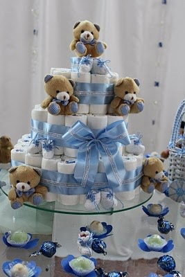

Sobre a Emily
Atenta aos detalhes, do começo ao fim
A Emily Cerimonial e Consultoria acompanha casamentos e celebrações em família em Fortaleza, com um cuidado que os clientes fazem questão de mencionar: atenção aos detalhes para que tudo saia da melhor forma.
Além do cerimonial, a Emily oferece consultoria para quem quer organizar o próprio evento com orientação de quem entende do assunto.
- Atendimento com agendamento na Cidade dos Funcionários
- Entrada acessível para pessoas em cadeira de rodas